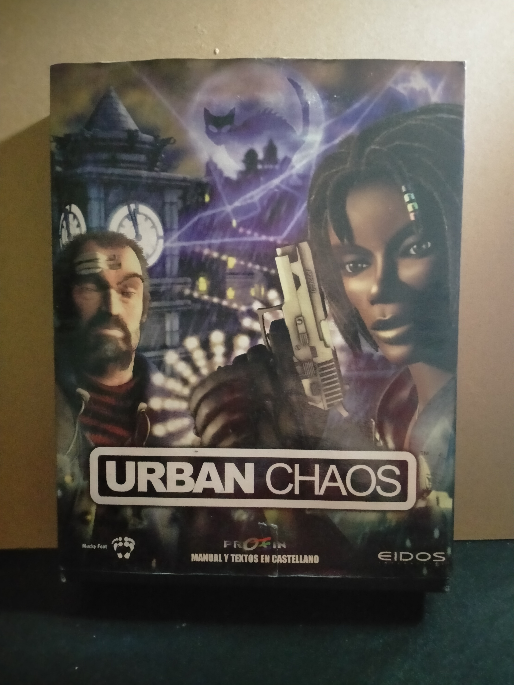

Ficha #000000
Urban Chaos
Urban Chaos es un juego de acción-aventura en tercera persona lanzado en diciembre de 1999 para Windows. Ambientado en una ciudad al borde del nuevo milenio, en él encarnas a D’arci Stern (y más tarde a Roper McIntyre), enfrentándote a bandas callejeras, explorando entornos semilibre e interviniendo en tiroteos, persecuciones, combate cuerpo a cuerpo y misiones diversas. Destaca por su atmósfera urbana, ciclo día‑noche, climatología dinámica y posibilidad de arrestar o abatir criminales, además de ofrecer conducción de vehículos. Vendió alrededor de medio millón de copias y recibió críticas positivas en PC (72%), aunque tuvo ports más controvertidos :contentReference[oaicite:2]{index=2}.
- Formato
- Big Box
- Plataforma
- Win95 Win98 Win2000
- Género
- Acción Aventura Shooter
- Serie
- Todos Big Box
- Desarrollador
- Mucky Foot Productions
- Distribuidor
- Eidos Interactive
- EAN
- —
Contenido de la edición
- Pendiente de documentación.
Preservación
- Protección
- No determinado
- Formato recomendado
- No aplica
- Jugable en virtualización
- No determinado
Pendiente de documentación